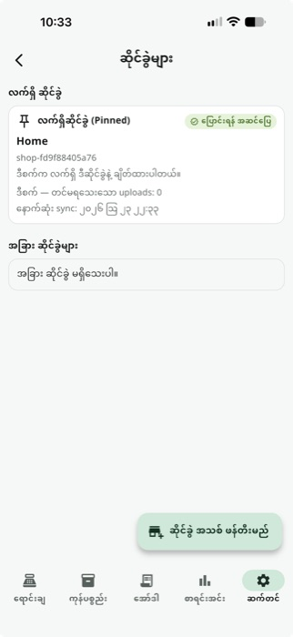

ဝန်ဆောင်မှုများ အားလုံး / ဆိုင်ခွဲများ
ဆိုင်ခွဲများ
Premiumဆိုင်ခွဲများ ရှိသော လုပ်ငန်းများအတွက် — Account တစ်ခုတည်းဖြင့် ဆိုင်ခွဲအများအပြားကို စီမံခန့်ခွဲပြီး၊ Device တစ်ခုကနေ ဆိုင်ခွဲတစ်ခုမှ တစ်ခု ဘေးကင်းစွာ ပြောင်းလဲနိုင်ပါတယ် (Sync မပြီးသေးသော ဒေတာများ မပျောက်ဆုံးစေရန် အဆင့်ဆင့် စစ်ဆေးပေးသည်)။
အဆင့်ဆင့် အသုံးပြုနည်း

ဆိုင်ခွဲစာရင်း ကြည့်ပြီး အသစ်ဖန်တီးပါ
လက်ရှိဆိုင်ခွဲ ကို Pin ပြုလုပ်ထားပြီး Pending Sync အရေအတွက်၊ နောက်ဆုံး Sync ချိန်၊ Health status ပါ ပြသည်။ "ဆိုင်ခွဲ အသစ် ဖန်တီးမည်" ကို နှိပ်ပြီး နာမည်ရိုက်ရုံဖြင့် ဆိုင်ခွဲအသစ် ဖန်တီးနိုင်သည် — Key မလိုအပ်ပါ (Account တူညီစွာ Login ဝင်ထားသော Device နှစ်ခုက ဆိုင်ခွဲစာရင်း တူညီစွာ တွေ့ရသည်)။
သိထားသင့်တဲ့ Tips
ဒေတာလုံခြုံစွာ ပြောင်းလဲခြင်း — ဆိုင်ခွဲ ပြောင်းလဲရာမှာ Owner PIN ပြန်ဝင်ခြင်း၊ Sync မပြီးသေးသော ဒေတာ ရှိမရှိ စစ်ဆေးခြင်း၊ Step-by-step Progress Dialog တို့ဖြင့် ဒေတာမပျောက်ဆုံးစေရန် အဆင့်ဆင့် ကာကွယ်ပေးသည်။
ပြောင်းလဲမှု ရပ်တန့်သွားလျှင် — App ကို ပိတ်လိုက်ရင်တောင် ပြန်ဖွင့်တဲ့အခါ ရပ်တန့်ခဲ့သော ဆိုင်ခွဲပြောင်းလဲမှုကို ဆက်လုပ်ရန် ပြန်လမ်းညွှန်ပေးသည်။
Unlink — Account ထဲက ဆိုင်ခွဲတစ်ခုကို ဖယ်ရှားလိုပါက Owner PIN ပြန်ဝင်ပြီး Unlink လုပ်နိုင်သည် (Confirm Dialog ပါသည်)။
All In One POS ကို ယနေ့ပင် စမ်းကြည့်ပါ
2 လ အခမဲ့ စမ်းသပ်ကာလ — Card မလို၊ Sign up မလို။
ဒေါင်းလုပ်ဆွဲမည်